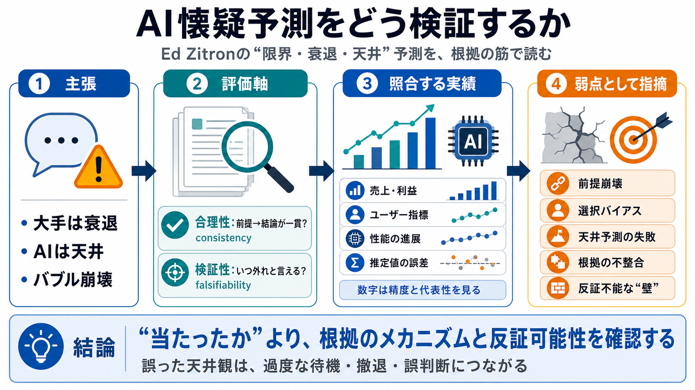

Reading Deck
02 / 16
予測×検証の観点
Zitron懐疑
検証
著名なAI懐疑論者Ed Zitronの「AIの限界・衰退・天井」といった予測が、提示された“根拠の記録”と“実績（成長/性能）”に照らしてどれだけ当たっているかを、筋の通り方中心に整理します。
対象：提示テキストに含まれる検証の主張（2024〜2025の描写が中心）。数値・データの網羅監査ではありません。
Problem
03 / 16
“当たったか”だけでは足りない
評価軸
重要
AI予測は当たり外れだけでなく、
理由（メカニズム）の整合
と、
反証可能性（いつ外れと言えるか）
が信頼性を左右します。
（i）合理性
根拠が“前提→結論”として一貫しているか
consistency（一貫性）
（ii）検証性
条件・期限があり、反例が出せるか
evaluable（評価可能性）
本デッキは「嘘の断定」ではなく、提示内容の“筋の弱さ”を中心に扱います。
Metaphor
04 / 16
天井論は延命可能
“壁”は
ずれる
「ピーク」「壁」「停滞」のような概念は、言い換えで先送りできるため、非反証可能になりやすく、当たり外れ評価が歪むリスクがあります。
よくある形
“今はまだ壁手前”
timing（時期調整）
評価の歪み
反例が出ても説明が変わる
reframing（再枠組み）
結果
検証が固定化（“間違い”が言いにくい）
immunity（免疫化）
だからこそ「期限・条件」「前提の強さ」を同時に見る必要があります。
Structure
05 / 16
検証の骨格
何を照合
する
提示検証では、Zitronの主張（例：大手が“死にかけ”、AIを押し込むしかない）を、売上・利益・ユーザー指標・モデル性能などの実績と照合し、前提の弱さを問題視します。
Zitron側
“限界/停滞/崩壊”のメカニズム依存主張
mechanism（機構）
実績側
企業の成長（収益・利益）、利用者数、性能の進展
evidence（証拠）
中心批判：前提が崩れると、そこから導く結論（バブル崩壊など）の信頼度も下がる。
Evidence
06 / 16
“衰退”描写が弱い
前提の
不一致
“Meta/Google/Microsoftは死にかけているのでAIを必死に押し込むしかない”という大枠に対し、提示された売上・利益の推移はむしろ成長を示すため、「衰退」前提が弱いと批判されています。
主張（例）
大手の衰退→必死のAI押し込み
decline narrative（衰退物語）
反証の方向
売上・利益が成長方向なら前提が崩れる
financial mismatch（財務不一致）
ここが崩れると、AIバブル崩壊などの連鎖結論も信頼しにくくなる、と整理されています。
Comparison
07 / 16
数字が“都合よく”見える
推定値の
扱い
MAU（アクティブユーザー）など、企業が公表しない期間は第三者計測に依存します。提示検証では、その外れ値や低め推定が“都合よく”使われた疑いが指摘されています。
課題
公表なし→第三者推定
third-party（第三者）
誤差
オーダー比較に留まりやすい
error（誤差）
リスク
低い外れ値を選ぶと結論が偏る
selection bias（選択バイアス）
つまり「数字がある＝正しい」ではなく、精度・代表性が重要だと論じています。
Distinction
08 / 16
“能力停滞”も崩れる
天井宣言の
失敗
2024〜2025に繰り返された「生成AIの限界」「進歩の停止/天井」「メカニズム依存の壁」は、提示検証の範囲では多くが不成立として扱われています。
繰り返し主張
幻覚（hallucination）・データ不足・効率/性能向上の停止
幻覚（hallucination）
提示検証の論点
理由（メカニズム）が後から否定される形になりやすい
mechanism breaks（機構の破綻）
“当たった/外れた”に加え、「なぜ当たらないのか」へ説明が寄っている点が重要です。
Logic
09 / 16
矛盾が連鎖する
根拠の
非連結
同一話者の複数主張が連結すると破綻するように見える、という批判があります。例として「成長が分からずAIを押し込む」と「達成には不正が必要」が同居して矛盾に見える、という指摘です。
主張A
大手は成長が分からずAIを押し込むしかない
uncertainty（不確実性）
主張B
目標数値が非現実的→達成に不正が必要に見える
implausible targets（不可能目標）
こうした“論理のつながりの弱さ”は、当たり/外れよりも解釈コストを上げます。
Checklist
10 / 16
提示検証の主要論点（要約）
5点の
核
① 前提崩壊
“衰退”描写が業績データと整合しない
assumption（前提）
② 数字の選び方
第三者推定の外れ値・低い値の利用疑い
data selection（選択）
③ 天井予測
能力停滞・進歩停止が繰り返し外れている
plateau（停滞）
④ 根拠の不整合
主張が連結すると破綻して見える
inconsistency（矛盾）
⑤ 反証不能
“壁”の条件が曖昧で、評価が固定されやすい
non-falsifiable（反証不能）
結論
“予測の精度”よりも“根拠の筋”が弱い
credibility（信頼性）
※ここでの要約は、提示された長文レビューにおける整理です。
Communication
11 / 16
怒りが説得を歪める可能性
感情と
正当化
Zitronの怒りや煽りのスタイルが、数字の妥当性よりも“所属・対立”による支持を維持させ得る、という視点が示されています。
起きうること
数字が出ても根拠が弱いと“根拠っぽさ”だけ残る
authority effect（権威効果）
結果
分析ではなく感情で納得が固定されるリスク
motivated reasoning（動機づけ推論）
情報品質の議論が、コミュニケーションの構造に飲み込まれる危険を指摘しています。
Scope
12 / 16
“潰れる/潰れない”は本質ではない
焦点のズレ
懸念
個別企業が失敗しても、能力の進歩は別経路で続き得るため、「ある会社が潰れるか」を中心に置くこと自体が、社会的インパクトの焦点としてズレる可能性があります。
能力の進歩
研究・投資・別プレイヤーで継続しうる
continuity（継続性）
企業の衰退
失速・撤退は起きても、一般化しにくい
generalization（一般化）
「AI懐疑＝全否定」ではなく、ここでは“予測の置き方”が問題視されています。
How to Judge
13 / 16
次に見るべき確認項目
採用するなら
慎重に
今後同種の予測を見るなら、(1) 反証可能な形、(2) 一貫した因果仮説、(3) 適切なデータ（選択・誤差込み）を確認するのが良い、という結論が示されています。
（i）反証
いつ・何が起きたら誤りか
falsify（否定）
（ii）因果
前提→結論が同じメカニズムで通るか
causal coherence（因果整合）
（iii）データ
選択バイアスや推定誤差を扱っているか
data hygiene（データ衛生）
“当たり外れ”だけで意思決定すると、同じ誤りを繰り返す恐れがある、と位置づけています。
Risk
14 / 16
意思決定の危険
待機・撤退の
リスク
誤った天井観・崩壊観が広がると、組織や個人が過度に待機・撤退・誤判断するリスクがあります。特に高確信度で外れるパターンは危険です。
誤判断の例
“すぐ止まる”前提で予算/採用/投資を抑える
underinvest（過小投資）
実害
機会損失と学習の遅れ（リスク累積）
opportunity loss（機会損失）
懐疑は必要でも、精度の低い予測を高確信で採用しない配慮が必要です。
Closing
15 / 16
まとめ：この検証が言うこと
評価は
低め
提示検証ではZitronのAI懐疑的予測は概ね外れており、少なくとも読み手が検証すると“根拠の筋”が弱く見えるため、予測の精度という観点で信頼できる水準に達していない、という評価になります。
主な理由
業績/ユーザー/性能との整合が弱い＋推論の連結が崩れる
alignment（整合）
残る制約
単一検証で、定量ベンチマークや網羅監査データが不足
missing audit（監査不足）
参考方針（本文の含意）：今後は全予測の記録、反証条件、同期間の中立ベンチマークとの比較が必要。
REFERENCES
16 / 16
References
No references found